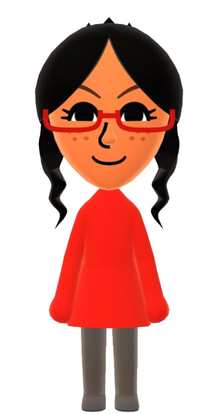

Un Mii est un avatar présent dans les consoles Wii, Nintendo 3DS, Wii U et Nintendo Switch. Il s'agit d'unpetit bonhomme en 3D qui représente le joueur ou d'autres personnes de son entourage que l'on crée et personnalise soi-même. On peut créer toutes sortes de Mii et s'amuser à représenter des célébrités.
Tomodachi Life, connu au Japon sous le titre Tomodachi Korekushon: Shin Seikatsu (トモダチコレクション 新生活?, Collection Tomodachi: Nouvelle vie), est un jeu vidéo de simulation de vie développé par Nintendo SPD et édité par Nintendo pour la console Nintendo 3DS. Il est sorti le 18 avril 2013 au Japon et en juin 2014 en Europe, Amérique du Nord et Australie1,2, et en juillet 2014 en Corée du Sud.
Aimer c'est vivre ! Alors vivez heureux! et apanouis j'ecris pour voir/ Honnetement j'ecris pour voir le rendu finale de suus $; je ene veu paqs etre dessus donc jecris bexp et jespere ne pas etere dessus
Aimer c'est vivre ! Alors vivez heureux! et apanouis j'ecris pour voir/ Honnetement j'ecris pour voir le rendu finale de suus $; je ene veu paqs etre dessus donc jecris bexp et jespere ne pas etere dessus
Ou ? La palette de création de Mii offre un large choix: forme, yeux, bouche, sourcils, nez, taches de rousseurs, rides et également la possibilité de lui choisir des lunettes ou lui ajouter une moustache ou une barbe. Le seul élément qui ne fait pas son apparition sont les oreilles. Sur la Nintendo 3DS et la Wii U, de nouveaux éléments sont ajoutés. Sur la Nintendo Switch, de nouvelles couleurs sont ajoutés pour les cheveux, les yeux, la barbe et les sourcils.Sur Nintendo Switch, l'apparition des Mii dans les jeux est très mineure: dans le jeu Nintendo Switch Sports, les Miis de l’opus précédent ont été remplacés et les personnages de la série Animal Crossing, bien que similaires à des Miis, n’en sont pas.Sur Nintendo Switch, l'apparition des Mii dans les jeux est très mineure: dans le jeu Nintendo Switch Sports, les Miis de l’opus précédent ont été remplacés et les personnages de la série Animal Crossing, bien que similaires à des Miis, n’en sont pas.
Représentation de Nebie Jasmine en Mii